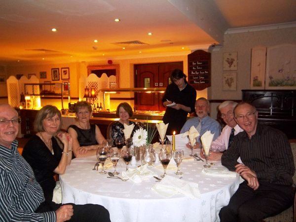
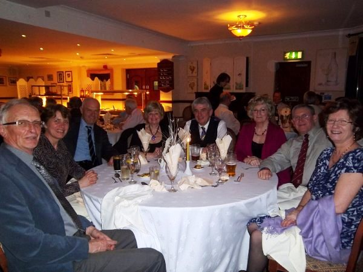

2010 Annual Prize Giving Dinner
The Annual Prize Giving Dinner was held on Friday, 25th February 2011 at the Fairways Hotel, Porthcawl.
To View the menu, click on:
Club Annual Prize Giving Dinner Menu
The Gallery:
 |
|
|  | |
|  | |
Awards (Not Attended)Winter Series (Blue Robin) : Ian FoxAnnual Pursuit Series Ron Griffiths Pursuit Challenge : Ian Fox Sunday Early Summer Series Solo : Ian Fox Sunday Late Summer Series Laser : No qualifiers Galley Trophy Silver Spoon: Paul Govier Emma Nettleship Trophy Best Youth & Junior: Aaron Bosley Offshore Race Saturday winner Town Trophy : Pat Moore Autumn G/Handicap Morris Challenge Shield : John Lockrtt Autumn Mirror Morris Challenge Shield : Mike Hobson Wednesday Series Laser: Alan Miles Autumn Laser Morris Challenge Shield : David Gibson October Regatta Tony Smee Trophy : Robert Dangerfield |
| Nick Dallimore | |
| Andrew Davies |
 |
| John Mellor | |
| Bob Taylor Offshore Race Sunday winner PHBC Trophy Wednesday Series Solo Autumn Solo Morris Challenge Shield Sunday Late Spring Series Solo Sunday Late Spring Series Solo | |
| Glen Wilbraham Sunday Late Summer Series Solo | |
| Gordon & Ruth Evans Sunday Early Spring Series
General Handicap Sunday Early Spring Series General Handicap Sunday Late Spring Series General Handicap | |
| Keith Jones Saturday Summer Series General Handicap Mirror Points Trophy Saturday Spring Series General Handicap Sunday Early Summer Series General Handicap Sunday Late Summer Series General Handicap | |
| Ken Wilford Wednesday Series General Handicap | |
| Nick Dalimore
Sunday Late Spring Series Laser Sunday Late Spring Series Laser Sunday Early Summer Series Laser | |
| Rebecca and Andrew Jenkins Most Improved Helm - Andrew Jenkins Most Improved Crew - Rebecca Jenkins | |
| Ros Downs Best Lady Helm Brocks pot for Dames |